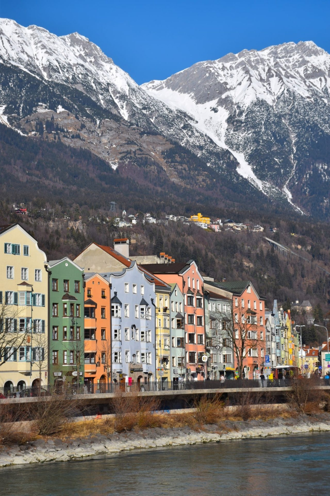
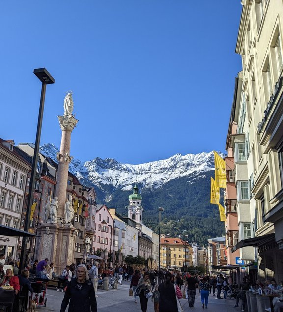
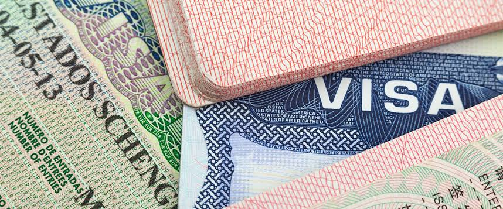
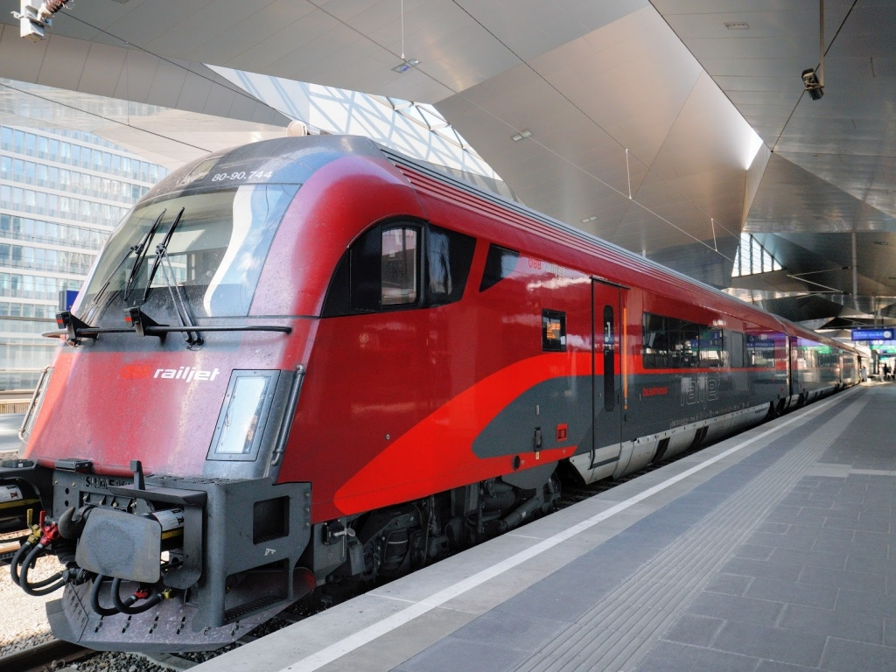
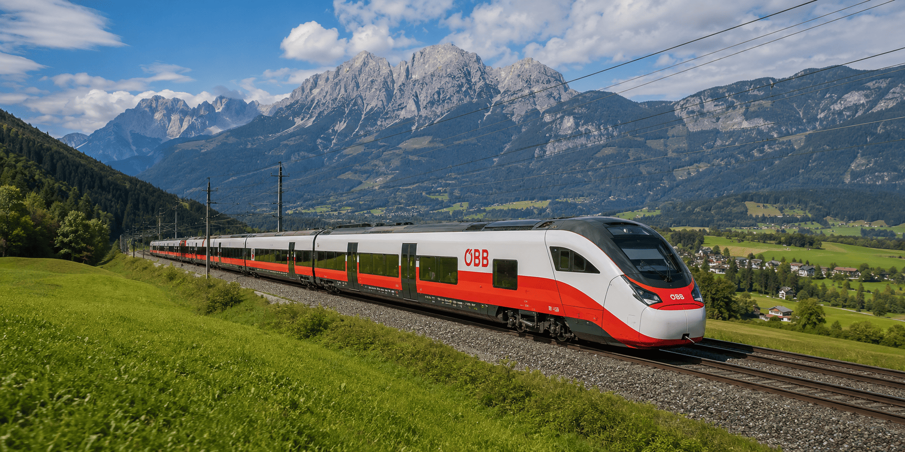
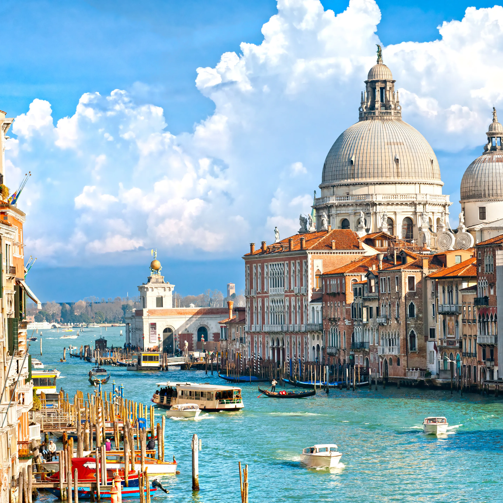

EUROPEAN TRAVEL BLUEPRINT 2027 [wiki/base/innsbruck.md]
阿爾卑斯門扉：
茵斯布魯克 交換生歐洲行紀
為 2027 年 2～7 月 Universität Innsbruck 交換生打造的預算友好型歐洲探索攻略。立足阿爾卑斯心臟，以嚴謹資料掌握鐵道早鳥、學期假期節奏與跨國移動邊界。
📌 知識追溯鏈：依據歐盟 EEAS 簽證文件、茵斯布魯克大學 2026/27 官方行事曆、ÖBB 官方時刻表、Flixbus 查詢與交換生真實遊記核實整理。

INNSBRUCK, TYROL, AUSTRIA — 2027 出發基地
FIELD 01 • THE HOME BASE [wiki/base/innsbruck.md]
生活在阿爾卑斯之巔：茵斯布魯克
Universität Innsbruck 坐落於雪山環抱的茵河谷地。這座城市不只是留學基地，更是橫跨德、奧、義的交通樞紐。

UNIVERSITÄT INNSBRUCK 主校區

老城區、黃金屋頂與路面電車系統
留學生在地須知
- 主要發車站點：長途列車（ÖBB）一律由 Innsbruck Hbf（主火車站） 發車。
- 巴士分離原則：⚠️ Flixbus 專屬站點在 Südbahnstraße，切勿走錯至主站前排。
- 山岳與自然體驗：Nordkette（北鏈山纜車）直上 Seegrube（2,256m），山頂俯瞰全景；Alpenzoo（阿爾卑斯動物園）為歐洲最高動物園。⚠️ 纜車與動物園單買票價待確認
- 票券省錢建議：若計畫同天搭纜車及參觀動物園，購買 Innsbruck Card 通常更划算。⚠️ 具體卡費待確認
- 冬末旺季物價：2–3 月滑雪季當地一般住宿極端昂貴，好在交換生有學生宿舍保障。
LEGAL ESSENTIALS • BORDER POLICY [wiki/practical/schengen.md]
申根免簽邊界與學生居留許可權益
持台灣護照在歐洲旅行自由度高，但長期交換學生與一般觀光客的法律身分有本質差異，必須嚴謹釐清。
⚖️ 關鍵法規：居留許可在奧地利 vs 其他申根國
• 奧地利境內：因交換超過 90 天，必須持有 奧地利學生居留許可（Aufenthaltsbewilligung Student）。在奧地利居留期間完全不佔用申根免簽天數。
• 前往其他申根國旅行（如義、德、法等）：依歐盟《申根邊境條例》，持單一國居留證前往其他申根國短期觀光，在奧地利以外的申根區仍受「每 180 天內最多停留 90 天」的短期停留規範！並非無上限停留。
| 制度項目 | 法規現況與 2027 展望 | 應對建議 |
|---|
| 護照效期 |
離境申根區時需有 3 個月以上效期 |
出國前確認效期至少至 2027 年底 |
| ETIAS 系統 |
歐盟多次推遲，截至 2025 年初未生效 |
⚠️ 待確認 2027 出發前確認是否啟用 |
| 跨國抽檢 |
阿爾卑斯邊境（布倫納山口）、跨國列車抽檢 |
護照正本 + 奧地利居留證 隨身必備 |

SCHENGEN PERMITS & PASSES (EEAS 2025)

PASSPORT CONTROL IN SCHENGEN AREA
ACADEMIC HORIZON • TRAVEL WINDOWS [wiki/travel-windows.md, wiki/base/university-calendar.md]
2027 夏季學期行事曆與旅行視窗
根據 Universität Innsbruck 官方公告：2027.03.01 開學授課、06.26 授課結束。時間長度與考程決定了旅行半徑。
02.15-02.28
抵達適應期（無課）
阿爾卑斯冬末，氣溫低、日照短。適合近郊熟悉環境：慕尼黑（火車2h）、薩爾茨堡、Nordkette 觀雪。
近距離適應
03.22-04.03
復活節假期（13天）
全學期唯一超長連續假期！春季回暖，適合南歐遠征：義大利大縱走、希臘或克羅埃西亞。
首選長途旅行
05.01-05.31
五月連假拼假期
05/06（四）耶穌升天節、05/17（一）聖靈節、05/27（四）聖體節。週五彈性安排可拼兩次 4 天連假。
3-4天中距離
06.28-07.31
結業暑期（⚠️ 需避開考期）
常態課程結束。日照長，適合北歐避暑或英法深度遊。7 月南歐（西、義）氣溫常破 38°C。
考後自由行
⚠️
重要學期限制提醒（授課結束 ≠ 考試結束）：6 月 26 日結課僅代表課堂演講結束。大學期末考試期間（Prüfungszeit）通常會延續至 7 月 23 日左右（視各系所及個人選課而定）。7 月出遊務必待開學確認考程後再訂票！
THE IRON ARTERY • ÖBB NETWORK [wiki/transport/oebb.md]
奧地利聯邦鐵路：中歐最舒適的旅行動脈
Innsbruck 是跨越布倫納山口（Brenner Pass）進入義大利的門戶，也是德鐵與奧地利全境高鐵網絡交匯處。

ÖBB RAILJET (RJ) — 穿越阿爾卑斯布倫納山口的旗艦列車
主要車种與服務型態
| 車種 | 型態 | 主力路線與行車時間 |
|---|
| Railjet (RJ / RJX) |
旗艦高速 |
慕尼黑直達（~2h）、維也納（~4.5h）、威尼斯（4h 57m，RJ81 直達） |
| Nightjet (NJ) |
夜間臥鋪 |
羅馬、佛羅倫斯、柏林等。省一晚住宿，提前 360 天開賣 |
| EuroCity (EC) |
歐洲城際 |
連接北義大利（Verona、Bologna）及德南波登湖區 |
| Regionalzug |
區間慢車 |
無劃位、不客滿。高鐵無票時作為跨國串聯備案（如 Brenner-Verona） |
⚠️ 劃位小常識（Seat Reservation）：ÖBB 跨國車票不強制劃位，但在旺季或週末，強烈建議多付 €3 預訂座位，避免因車廂客滿而站立近 5 小時！
BUDGET MECHANISM • SPARSCHIENE [wiki/transport/sparschiene.md]
Sparschiene（省錢票）：留學生必修搶票法則
Sparschiene 是 ÖBB 針對提早預訂旅客釋出的限量折扣票。掌握購票機制，搭乘頂級 Railjet 甚至比公路巴士更平價。
| 票種名稱 | 二等艙起價 | 退改條款與劃位規則 |
|---|
| Sparschiene Europe |
€4.90 起* |
綁定車次班點，不可退款、不可更改 |
| Sparschiene Komfort |
€9.90 起* |
內含免費對號座，15天前可全額退款（15天內扣50%） |
| Nightjet 臥鋪/座位 |
€24.90 起* |
最長可提前 360 天預購，床位早鳥極搶手 |
| 當天現場直達票 |
約 €68.50 |
無折扣全額票，班次熱門時甚至有售罄風險（社群回報實例） |
* 註：起始起價為短途基準，跨國中長途依距離遞增（如威尼斯早鳥約 €38.40–€40.70）。
提前 180 天錨定
日間列車提前 6 個月開賣，確認假期日期後即可倒數搶票。
搜尋勾選「Best Price」
在 ÖBB App 查詢時勾選最低價篩選，自動列出離峰折扣班次。

ÖBB TICKET BOOKING SYSTEM — 留意分段有效之紅色警示
ALTERNATIVE LOGISTICS • BUS & AIR [wiki/transport/flixbus.md, wiki/transport/budget-airlines.md]
長途巴士與廉價航空：阿爾卑斯的次級動線
火車不是唯一解答。當鐵路早鳥票售罄、或目的地跨越海洋時，廉價巴士與周邊樞紐機場便成為關鍵後盾。
Flixbus 廉價巴士
預算最後防線
• 穩定低價優勢：IBK 往威尼斯常態票價約 €27.48–€28.98，即便行前數日預訂亦極穩定。
• 紅眼過夜車省住宿：01:30 出發，清晨 06:55 抵達 Mestre，省下一晚住宿費。
• 車上設備：附 Wi-Fi 與充電插座，車程約 5–7 小時，體力消耗較大。
• ⚠️ 站點大雷區：發車站為 Innsbruck Südbahnstraße，絕非中央主車站 (Hbf)！
easyJet & 慕尼黑樞紐
遠距跨國首選
• 茵斯布魯克機場 (INN)：航點較少，已知有 easyJet 直飛倫敦蓋威克 (LGW)，淡季票價約 €52.49–€106。⚠️ 2027年票價待出發前確認
• 隨身行李嚴格條款：僅免除座椅下方隨身小包（45×36×20cm），登機箱加購費用高昂。
• 周邊替代樞紐 München (MUC)：火車 2h 至慕尼黑機場，航點遍及全歐（冰島、希臘、西葡等）。
MASTER INTEGRATION • DECISION MATRIX [wiki/transport/oebb.md, wiki/transport/flixbus.md, wiki/destinations/venice.md]
決策模擬：復活節 13 天，前往威尼斯你選誰？
【跨頁面知識整合案例】 結合大學行事曆（3/22長假開端）× 交通數據比對（ÖBB vs Flixbus）× 威尼斯本島/陸地車站差異 × 學生預算防線。
提早 1-2 個月首選
方案 A：鐵道早鳥
ÖBB Railjet 81 直達列車
€43.70 （含 €40.70 早鳥 + €3 劃位）
- 出發點：Innsbruck Hbf（市區步行即達）
- 行車時間：4小時 57分（09:28 出發，14:25 抵達）
- 抵達站點：Venice Santa Lucia（本島）
- 核心優勢：行車時間與巴士相當，但直接抵達威尼斯本島大運河畔，省下從陸地 Mestre 轉乘進島的 20–30 分鐘與換乘車資，免拖大行李搭船，舒適度大勝！
💡 決策結論：只要提早搶到 Sparschiene，多付約 €15 換取直達本島、大窗阿爾卑斯景緻與零塞車風險，體驗最佳！
VS
方案 B：平價公路
Flixbus 13:10 直達巴士
€27.98 （若前一日紅眼則為 €27.48）
- 出發點：Innsbruck Südbahnstraße（需特別留意站點位置）
- 行車時間：5小時 00分（13:10 出發，18:10 抵達 Mestre）
- 抵達站點：Venice Mestre / Tronchetto
- 隱形成本：純行車時間僅比火車多 3 分鐘，但停靠陸地端 Mestre，需再花時間與車資轉搭區間火車或公車進本島，且阿爾卑斯山公路有塞車風險。
💡 決策結論：若出發前 3 天才臨時決定，ÖBB 全額票飆至 €68.50 時，Flixbus 的 €28 是守住荷包的最佳防線！
DESTINATIONS • THE ITALIAN ESCAPE [wiki/destinations/venice.md, wiki/destinations/milan.md]
水鄉威尼斯與時尚米蘭：交換生精明攻略
搭乘 ÖBB 南下，最容易抵達的文化核心。善用遊記經驗與學生身分，破解高價觀光陷阱。

VENICE — 潟湖中的 118 座小島與貢多拉
Venezia 威尼斯小資策略
本島無車
• 聖露西亞車站優勢：下車即步行區。威尼斯橋樑階梯無數，拖大行李極痛苦，建議輕裝背包一日遊或住 Mestre 對岸。
• 零成本玩法：大運河步行、里阿爾托橋、聖馬可廣場皆免費。⚠️ 貢多拉費用待確認（遊記通常回報 €80 起，建議 4–5 位同學分攤）。
Milano 米蘭預約避坑指南
必做預約
• 米蘭大教堂 (Duomo)：⚠️ 現場無直接排隊售票！（2023遊記經驗），必須提前於官網預約門票及登頂時段。⚠️ 票價請出發前確認
• 平民美食避開精品高價：前往米蘭中央市場（Mercato Centrale Milano），品嚐牛肚包（Panino con bollito）與熟食小吃。
CONTINENTAL HORIZON • MAP & EXPANSION [wiki/transport/oebb.md, wiki/travel-windows.md]
版圖延伸：文藝復興之都與德奧核心
除了威尼斯與米蘭，茵斯布魯克周邊的鐵路路網，讓你可在 2–6 小時內輕鬆踏足更多歐洲名城。
Firenze 佛羅倫斯
• 極具競爭力票價：Sparschiene 曾出現 €31.80 早鳥特惠。
• 行車與轉車：約 6h 11m，通常在 Verona 或 Bologna 轉乘。
• 文化朝聖：聖母百花大教堂、烏菲茲美術館。
Wien 維也納
• 奧地利首都：Railjet 直達約 4h 30m。
• 假期定位：適合 5 月聖靈降臨節 3 天長週末。
• 經典巡禮：美泉宮、藝術史博物館與百年咖啡館。
Hallstatt & München
• München 慕尼黑：僅 2h 直達！週末快閃與大採購首選。
• Hallstatt 哈修塔特：阿爾卑斯湖區仙境，交換生必訪奧地利名勝。
• 交通樞紐：慕尼黑機場轉乘極為方便。
EPILOGUE • KNOWLEDGE TRACEABILITY [index.md, log.md]
行前 5 大紀律與知識追溯矩陣
在每次出發前，逐項確認後勤、票務與法律規範；所有內容皆可追溯至 Wiki 與原始文檔。
行前五大黃金守則
- 考程先於機票：6 月底結課後，先確認個人期末考時程（約至 7/23 前後）再敲定暑期出遊。
- 提早 180 天鎖定早鳥：復活節行程一確定，立刻上 ÖBB 預訂 Sparschiene Europe。
- 不可妥協的 €3 劃位費：跨國高鐵多付 €3 買座位，避免站立 5 小時進義大利。
- 巴士車站陷阱警惕：搭乘 Flixbus 請至 Südbahnstraße，切勿在主火車站 (Hbf) 白等。
- 雙證件與申根天數警覺：護照 + 奧地利居留證隨身帶，前往其他申根國累計仍須遵守 90/180 限制。
原始資料 ➔ Wiki ➔ 簡報對照表
* 標記 ⚠️ 待確認 者為經驗推估或變動性票價，出發前請以官方即時系統為準。